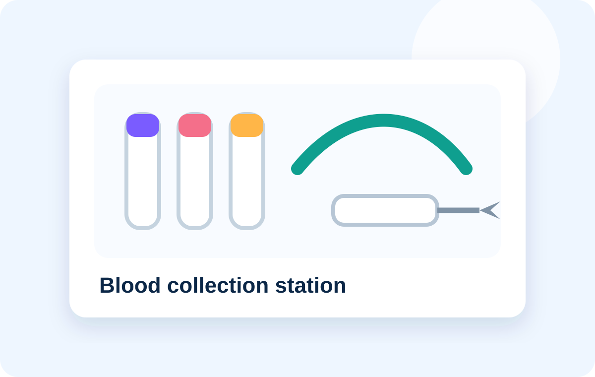

Phlebotomy station
Blood collection, fully considered.
A professional station range built around the everyday needs of venepuncture and specimen handling.
Blood collection tubes including specialist variants
Needles, holders, safety sets and tourniquets
Alcohol wipes, cotton wool, plasters and dressings
Gloves, specimen bags and supporting accessories